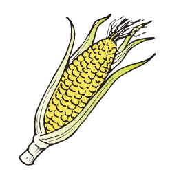

2013年8月号
「玉蜀黍」この食べ物わかりますか？

お米、麦とともに世界三大穀物であるトウモロコシ！
日本の夏にすっかり溶け込んでいるトウモロコシ！
茹でてよし、焼いてよしのトウモロコシ！
トウモロコシを漢字に当てると「玉蜀黍（とうもろこし）」と書きます。
中国から渡来した「モロコシ」という植物によく似ていたことから「唐のモロコシ」（唐＝舶来）という意味で「トウモロコシ」となったようです。
「モロコシ」の漢字は「蜀黍」と書き、「玉」が用いられた由来は、トウモロコシの別名に「玉黍」があり、実が黄金色に美しく並んでいることに由来しているとか。
しかし、トウモロコシ自体はコロンブスが欧州に伝え、ポルトガル人宣教師が安土桃山時代に日本に持ち込んだといわれています。
また、昔はポルトガル人のことを「南蛮人」と言ったことから、別名「南蛮黍（なんばんきび）」とも呼ばれるようになりました。
今日の日本では欠かすことのできない食べ物の一つがトウモロコシ！
特に「スイートコーン」は様ざまな品種が開発され、糖度が高く皮の柔らかい、生でも食べられるトウモロコシが誕生しています。
食用のみならず、畜産業の飼料、工業用原料としても深く浸透しており、トウモロコシをエネルギーにかえる新たな試みもあります。
ということで、「トウモロコシが地球を救う」日が近いのかもしれませんよ？？
まっ、何はともかく、夏の風物詩、「トウモロコシ」を美味しくいただきましょう！！
日本の夏にすっかり溶け込んでいるトウモロコシ！
茹でてよし、焼いてよしのトウモロコシ！
トウモロコシを漢字に当てると「玉蜀黍（とうもろこし）」と書きます。
中国から渡来した「モロコシ」という植物によく似ていたことから「唐のモロコシ」（唐＝舶来）という意味で「トウモロコシ」となったようです。
「モロコシ」の漢字は「蜀黍」と書き、「玉」が用いられた由来は、トウモロコシの別名に「玉黍」があり、実が黄金色に美しく並んでいることに由来しているとか。
しかし、トウモロコシ自体はコロンブスが欧州に伝え、ポルトガル人宣教師が安土桃山時代に日本に持ち込んだといわれています。
また、昔はポルトガル人のことを「南蛮人」と言ったことから、別名「南蛮黍（なんばんきび）」とも呼ばれるようになりました。
今日の日本では欠かすことのできない食べ物の一つがトウモロコシ！
特に「スイートコーン」は様ざまな品種が開発され、糖度が高く皮の柔らかい、生でも食べられるトウモロコシが誕生しています。
食用のみならず、畜産業の飼料、工業用原料としても深く浸透しており、トウモロコシをエネルギーにかえる新たな試みもあります。
ということで、「トウモロコシが地球を救う」日が近いのかもしれませんよ？？
まっ、何はともかく、夏の風物詩、「トウモロコシ」を美味しくいただきましょう！！
 次月号へ
次月号へ